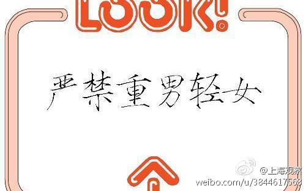

这样的主义，无论男权女权，都很低级。//@齊之沐:女权主义者在争取权利的时候会说男女是平等的，在履行义务的时候会说女性是弱势的。女权主义的终极目的不是建立平等社会，而是建立重女轻男的不平等社会。//@爱开源未来:早先看过一篇文章，说女权主义最终极的就是争取生育自由@上观新闻:【生育文化为何令“剩女”恐惧？】一条被三千多个赞自动置顶的评论这样说：“在生孩子这件事上，结婚真的是百分百不利于女人的制度设计。还真不如未婚生子，自己说了算。婚姻对女人来说，越来越像鸡肋。”网页链接 